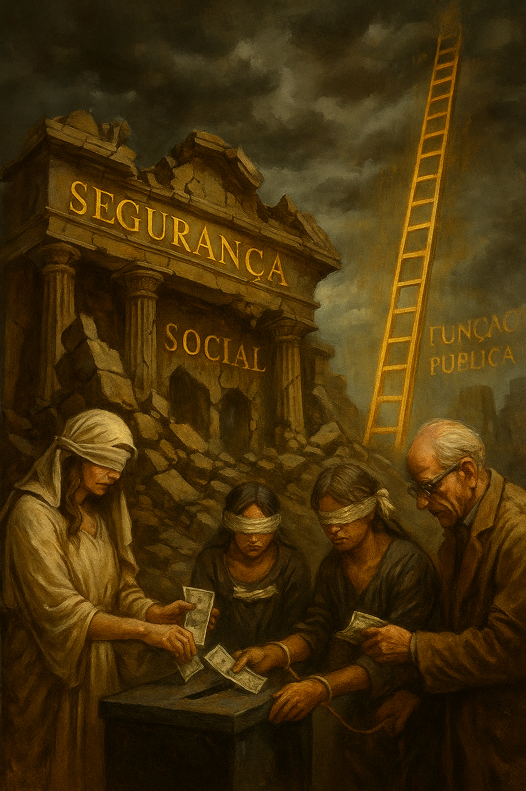

Publicado em 2025-05-14 08:55:30
Desde o seu nascimento, o sistema de Segurança Social foi apresentado aos portugueses como o pilar de justiça intergeracional: quem trabalha hoje garante o sustento de quem trabalhou ontem, e será amanhã amparado pelos que vierem. Uma bela ideia. Um contrato social inspirador.
Mas a realidade — dura, crua e silenciada — é outra: a Segurança Social portuguesa está longe de ser justa, transparente ou sustentável.
É, na verdade, um sistema desequilibrado, profundamente desigual e financeiramente opaco, que sobrevive à custa da ignorância dos contribuintes e da hipocrisia dos governos.
Contrariamente ao que se pensa, os descontos mensais que os trabalhadores fazem para a Segurança Social não são acumulados numa conta pessoal para garantir a sua pensão futura.
Na prática, trata-se de um sistema de repartição imediata: o dinheiro entra e sai no mesmo ciclo — pago hoje, usado hoje.
E o pior: o dinheiro que entra não é usado apenas para pensões, mas também para:
É, assim, um fundo misturado, onde a lógica contributiva e a assistencial se confundem deliberadamente.
A injustiça mais escandalosa é a diferença entre as pensões da Segurança Social e da Caixa Geral de Aposentações (CGA):
Ambos os regimes são financiados por contribuições… mas um serve para cidadãos de primeira, outro para cidadãos de terceira.
E agora que a CGA está falida, já se pondera usar o fundo da Segurança Social para a salvar — empurrando ainda mais os contribuintes do setor privado para o abismo.
A maioria dos portugueses não sabe para onde vão os seus descontos.
Não tem acesso a contas claras.
Não conhece a real sustentabilidade do sistema.
E não tem qualquer poder de decisão sobre o seu futuro contributivo.
O Estado exige fé… mas oferece opacidade.
Quando se fala em reformas baixas ou pensões futuras “em risco”, os responsáveis políticos culpam o envelhecimento da população.
Como se fosse uma surpresa.
Como se a demografia não estivesse prevista há décadas.
Como se o problema não fosse má gestão, desigualdade estrutural e ausência de coragem para reformar.
Se nada mudar:
A Segurança Social não é um sistema justo, nem está a garantir o futuro de ninguém.
É uma construção política instável, perpetuada pela desinformação e pelo medo.
Ou exigimos transparência, igualdade e reforma profunda —
Ou continuaremos a pagar por um sistema que, um dia, não pagará por nós.
Por Francisco Gonçalves in Fragmentos de Caos